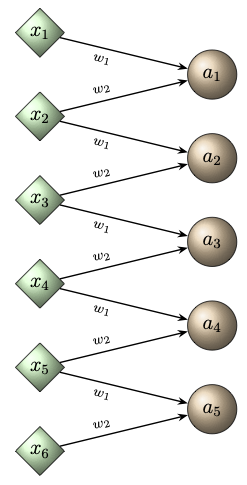
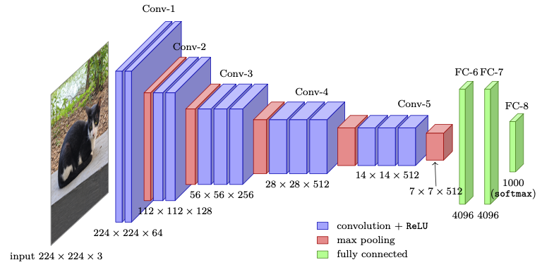

Chapter 8: Advanced Architectures
So far, we have studied multi-layer perceptrons (MLPs), which are fully connected (dense) feedforward neural networks. We have also seen that these networks perform well for a variety of pattern recognition problems that can be viewed as function approximation tasks. This is consistent with their property as universal approximators. We also studied their role in scientific computing through Physics-Informed Neural Networks (PINNs).In this chapter, we focus on some special architectures that are designed for specific types of data or applications, like convolutional neural networks (CNNs), which are particularly suitable for image recognition, and recurrent neural networks (RNNs), which are suitable for language and sequence modelling. We conclude the chapter with a discussion of a recent development called Transformers, which is an attention-based architecture that has revolutionized sequence modelling. Transformers provide a unified framework for learning from text, images, and beyond.
In Section 8.1, we introduce convolutional neural networks. We first define the one-dimensional convolutional layer, together with stride, padding and pooling. We then extend these ideas to images and illustrate them with blurring and edge-detection kernels. In Section «Click Here», we turn to sequence data. We first recall recurrent neural networks briefly and point out their limitations. We then introduce self-attention, positional encoding and causal attention. Finally, we assemble these components into the transformer block and use it to build a model for sequence prediction.
8.1 Convolutional Neural Networks
The dense structure of MLPs treats each input neuron independently and ignores the spatial structure of the input data. For example, in image data split into pixels, nearby pixels are highly correlated, and certain local features like edges or corners can appear at different locations in the image. The dense structure also leads to a very large number of parameters, which grows in proportion to the number of pixels. Convolutional Neural Networks (CNNs) overcome these limitations by incorporating the local spatial structure of data through local connectivity and weight sharing.In local connectivity, each neuron is connected only to a small spatial region (patch) of the input in order to capture local patterns. Through weight sharing, the same set of weights, referred to as a filter or kernel, is used across different spatial locations. Weight sharing reduces the number of parameters. It also makes the layer translation equivariant, which means that a shift of the input produces the same shift of the output. Pooling layers are often added to reduce spatial dimensions and to retain the most important features. In this section, we briefly outline CNNs.
8.1.1 One-Dimensional Convolutional Layer
In many applications, such as time-series analysis and speech recognition, the input is indexed by a single variable, namely, time or position in the sequence. At each index, the input may contain one or several values (channels). For such data, one-dimensional convolutional neural networks (1D CNNs) provide an efficient architecture that captures local dependencies along the temporal or sequential axis.Let \(f, g : \mathbb{R} \to \mathbb{R}\). The continuous one-dimensional convolution of \(f\) and \(g\), denoted by \((f * g)\), is defined as
Analogously, in the discrete case where the signals are sequences, say, \(f,g:\mathbb{Z}\rightarrow \mathbb{R}\) given by
In practice, we have signals of finite length. In this case, we extend the signal by zero. Such a signal is called a signal with finite support. For instance, if we have
This can be viewed as a cross-correlation (or convolution without kernel flipping) between the input \(\boldsymbol{x}\) and the kernel
In contrast, edge detection in images corresponds to emphasizing changes (differences) in the signal, i.e., high-frequency components. In one dimension, this can be seen directly through convolution with a difference kernel or high-pass filter.
Consider a one-dimensional input signal \( \boldsymbol{x} = [x_1,\, x_2,\, \ldots,\, x_6] \) and a difference kernel (or edge detection kernel)
In two dimensions, similar difference kernels (e.g., Sobel or Prewitt filters) are used to detect edges in images.
8.1.1.1 Convolutional Layer
Let the input to a one-dimensional convolutional layer be a sequence (or signal)where
The number \(s\) is called the stride, which specifies the step size with which the kernel moves along the input.
The following example illustrates a one-dimensional convolutional layer with stride \(s=1\). Such a layer can be expressed as a layer of a feedforward neural network with two constraints on its weights. Many weights are set to zero and are kept at zero during training. The remaining weights are shared by all neurons of the layer. A general result is stated in Problem 8.1.
Let us take stride \(s = 1\). Then,

Figure 8.1: The one-dimensional convolutional layer with kernel \(\boldsymbol{w}=[w_1, w_2]\) and stride \(s=1\), drawn as a layer of a feedforward network. Each neuron \(a_i\) is connected only to the inputs \(x_i\) and \(x_{i+1}\). All neurons share the weights \(w_1\), \(w_2\) and the bias \(b\). All missing connections have weight zero.
Given an input of length \(N\), if we pad with \(p\) zeros on each side, the effective input length becomes \(N + 2p\). Thus, for a kernel size \(r\), a stride \(s\), and padding \(p\), the convolutional layer is given by
With stride \(s=1\) and \(p=(r-1)/2\) for an odd kernel size \(r\), the output length equals the input length \(N\).
After a convolutional layer produces its output (called the feature map), it is often followed by a pooling layer. Given an input feature map
Here, \(\boldsymbol{a}\) denotes the output feature map obtained from the preceding convolutional layer. The pooling operation acts on \(\boldsymbol{a}\) to produce a lower-dimensional representation \(\boldsymbol{a}^{(\text{pool})}\), which can be fed to the next convolutional or fully connected layer. Schematically, we have
Thus, pooling serves two main purposes, namely,
- It reduces the spatial resolution (or length) of the feature map, thereby decreasing the computational cost and the number of parameters in the subsequent fully connected layers. The pooling layer itself has no learnable parameters.
- It increases translational invariance, meaning that small shifts or distortions in the input do not significantly change the pooled output.
and consider max pooling with pooling size \(r_p=2\) and stride \(s_p=2\). Then,
Hence, the pooled output is
which has reduced length compared to the original feature map.
8.1.1.2 Multilayer Convolutional Networks
A convolutional neural network is obtained by composing several convolutional layers, in the same way as a feedforward network is obtained by composing dense layers in Chapter 1. For simplicity, we consider layers with one kernel. The superscript \((l)\) denotes the layer index, as in Chapter 4.- \(\boldsymbol{w}^{(l)} \star \boldsymbol{a}^{(l-1)}\) is computed with the stride and the padding of layer \(l\),
- the bias \(b^{(l)}\) is added to every entry,
- \(\underset{\overline{~~~~}}{\mathscr{A}}^{(l)}\) applies \(\mathscr{A}^{(l)}\) to every entry, and
- \(\mathcal{P}^{(l)}\) is a pooling operation or the identity map.
Convolutional layer. Take the difference kernel \(\boldsymbol{w}^{(1)}=[-1,\,1]\) of the edge-detection example, with bias \(b^{(1)}=0\), stride \(1\), no padding and activation \(\mathscr{A}^{(1)} = \texttt{ReLU}\). Then
Pooling layer. The pooling operation \(\mathcal{P}^{(1)}\) is max pooling with window size \(r_p=2\) and stride \(s_p=2\). It gives
Output layer. The feedforward network consists of the output layer only, so that \(L = 1\), \(n_0 = 3\), \(n_1 = 1\) and \(\hat{n} = 0\). With weights \(\boldsymbol{v}=(0.1,\, 0.2,\, 0.3)\), bias \(c=0\) and the identity activation, it gives the prediction
8.1.2 Two-Dimensional Convolutional Layer
We now extend the one-dimensional convolutional layer to the two-dimensional case, which is the core operation in convolutional neural networks (CNNs) for image processing.8.1.2.1 Convolution Operator
In this subsection, we briefly recall the basic definitions concerning convolution. We start with convolution of two functions from \(\mathbb{R}^2\) to \(\mathbb{R}\).Let \(f, g : \mathbb{R}^2 \to \mathbb{R}\). The convolution of \(f\) and \(g\), denoted by \((f * g)\), is defined by
Let \(A = [a_{i,j}] \in \mathbb{R}^{m \times n}\) and \(W = [w_{p,q}] \in \mathbb{R}^{r_h \times r_w}\). The discrete convolution of \(A\) and \(W\), denoted by \((W * A)\), is defined by
Given a two dimensional discrete signal \(A\), the \(2\times 2\) supported kernel that produces a simple moving average is given by
Averaging replaces each pixel by the mean of its local neighborhood, which suppresses rapid spatial variations (high-frequency components) while preserving slowly varying content (low-frequency components). Consequently, sharp transitions (edges) and noise are attenuated, yielding a blurred (smoothed) image. This relates it to the concept of a low-pass filter.
Show that the operation produces a blurred image (equivalently, show that the kernel \(W\) is a low-pass filter).
- Write down the expression for \((W * X)_{i,j}\), where \(X = [x_{p,q}]\) is a two-dimensional input signal (or image) and show that each output pixel \(a_{i,j}\) is the average of the \(3\times3\) neighborhood of \(X\) whose top-left entry is \((i,j)\).
- Explain why this operation produces a blurred image by giving an argument similar to the one given in the above example.
A smoother and more natural way to blur an image is to use a Gaussian blur kernel, whose entries are proportional to a discrete approximation of a two-dimensional Gaussian function. A commonly used \(3\times3\) Gaussian blur kernel is
The weights are largest at the center and decrease symmetrically outward, so this filter performs a weighted average that preserves overall image brightness while reducing noise and small-scale variations. Unlike the simple mean filter, the Gaussian kernel avoids sharp artifacts and produces a more visually natural blurred image.
A simple vertical edge detection kernel is
The matrices \(W_v\) and \(W_h\) are called Prewitt filters. The Sobel filters give the weight \(2\) to the central row or column, as in the next example.
The overall edge magnitude can be approximated by combining both directions:
where \(w_{p,q}\) are the entries of \(W_{\text{G}}\), replaces each pixel by a weighted local average. This operation suppresses high-frequency components, resulting in a blurred (low-pass) image.
In contrast, an edge detection filter accentuates regions of sharp intensity change. Two common examples are the Sobel and Laplacian kernels.
- Sobel kernels:
\begin{eqnarray} W_x = \begin{bmatrix} -1 & 0 & 1\\ -2 & 0 & 2\\ -1 & 0 & 1 \end{bmatrix}, \qquad W_y = \begin{bmatrix} -1 & -2 & -1\\ 0 & 0 & 0\\ 1 & 2 & 1 \end{bmatrix}. \end{eqnarray}(8.9)
These measure horizontal and vertical intensity gradients, respectively. For an input image \(X\), the feature maps are
\begin{eqnarray} A_x = W_x * X, \qquad A_y = W_y * X, \end{eqnarray}(8.10)and the edge magnitude is
\begin{eqnarray} A_{\text{edge}} = \sqrt{A_x \odot A_x + A_y \odot A_y}, \end{eqnarray}(8.11)where the square root is taken entrywise.
- Laplacian kernel:
\begin{eqnarray} W_{\text{L}} = \begin{bmatrix} 0 & -1 & 0\\ -1 & 4 & -1\\ 0 & -1 & 0 \end{bmatrix}. \end{eqnarray}(8.12)
This kernel approximates the negative of the Laplacian, \(-\Delta\), of the image intensity. The Laplacian emphasizes regions where intensity changes rapidly in multiple directions, producing strong responses along edges and contours.
Thus, while the Gaussian blur removes detail by averaging neighboring pixels, edge-detection filters highlight rapid local variations. Together, these operations illustrate the fundamental duality between low-pass filtering (smoothing) and high-pass filtering (edge detection) in image processing.
8.1.2.2 2D Convolution Layer
Let us restrict to grayscale images, where the input and the kernel are two-dimensional arrays (matrices).Let the input to the layer be a two-dimensional array
Let the convolutional kernel (or filter) be
For given stride values \(s_h, s_w \ge 1\) in the vertical and horizontal directions, respectively, the convolutional layer produces the output
If zero-padding of size \(p_h\) and \(p_w\) is applied to the height and width directions, the effective input dimensions become
Assume that the kernel \(W\) slides over \(X\) with stride \((s_h, s_w) = (1,1)\) and without padding. Since \( n_{0h}= n_{0w} = 4\) and \(r_h = r_w = 3\), the output dimensions are
Thus, the output activation map \(A = [a_{i,j}] \in \mathbb{R}^{2\times2}\) is given by
ReLU.
- An image of size \((32, 32)\) is convolved with a \(3\times3\) Gaussian blur kernel
using stride \((1, 1)\) and no padding \((p_h = p_w = 0)\).
- The same image is convolved with a \(5\times5\) kernel
using stride \((2, 2)\) and no padding \((p_h = p_w = 0)\).
- Now apply a \(3\times3\) Laplacian edge-detection kernel
using stride \((1, 1)\) and padding \((p_h = p_w = 1)\) (“same” padding).
Show that the output has the same spatial dimensions as the input.
- Let an input of size \((64, 64)\) pass through two convolutional layers in sequence:
- Layer 1: kernel size \((3, 3)\), stride \((1, 1)\), padding \((1, 1)\),
- Layer 2: kernel size \((5, 5)\), stride \((2, 2)\), padding \((2, 2)\).
A two-dimensional max-pooling layer with window size \(r_{p,h}\times r_{p,w}\) and stride \((s_{p,h}, s_{p,w})\) acts on the feature map \(A = [a_{i,j}]\) as
Similarly, min-pooling layer and average-pooling layer can also be defined.
The above layer has one kernel and produces one feature map. In practice, a layer has several kernels of the same size. Their number \(K\) is chosen by the designer of the network, in the same way as the width of a layer in a feedforward network. We write the entries of the \(k^{\rm th}\) kernel as \(w_{p,q,c,k}\) and its bias as \(b_k\). Each kernel is applied to the same input and gives its own feature map:
ReLU. Each layer is followed by max pooling with a \(2\times2\) window and stride \(2\). The sizes are as follows.
- Layer 1: the convolution gives \((28-5)+1 = 24\), and pooling gives \(\lfloor (24-2)/2\rfloor + 1 = 12\). Hence, \(A^{(1)}\in\mathbb{R}^{12\times12}\).
- Layer 2: the convolution gives \((12-5)+1 = 8\), and pooling gives \(\lfloor (8-2)/2\rfloor + 1 = 4\). Hence, \(A^{(2)}\in\mathbb{R}^{4\times4}\).
- Flattening \(A^{(2)}\) gives a vector in \(\mathbb{R}^{16}\). An output layer with \(10\) neurons and the softmax function \(\texttt{sm}\) gives the class probabilities.
8.1.3 A Real Architecture: VGG-16
We conclude the discussion of CNNs with a network that is used in practice. VGG-16 was introduced by Simonyan and Zisserman in 2014. It classifies colour images of size \(224\times224\times3\) into the \(1000\) classes of the ImageNet data set, such as animals, vehicles and everyday objects. Its architecture is shown in Figure 8.2.
Figure 8.2: The architecture of VGG-16. The height of each box shows the spatial size of the feature map, and its width shows the number of channels.
- Convolutional layers. There are \(13\) convolutional layers, arranged in five blocks of \(2\), \(2\), \(3\), \(3\) and \(3\) layers. Every layer uses kernels of spatial size \(3\times3\), stride \(1\), padding \(1\) and the activation
ReLU. Hence, every convolutional layer keeps the spatial size of its input. - Channels. Each layer has several kernels, as in the remark on colour images and multiple channels. The number of kernels is \(64\) in the first block, and it doubles in each of the next blocks up to \(512\). For example, each kernel of the first layer has size \(3\times3\times3\), and each kernel of the second layer has size \(3\times3\times64\).
- Pooling. Each block ends with max pooling with a \(2\times2\) window and stride \(2\). The pooling operation of every other layer is the identity map. The spatial size is halved by each pooling, from \(224\) to \(112\), \(56\), \(28\), \(14\) and finally \(7\).
- Feedforward network. The output of size \(7\times7\times512\) is flattened into a vector of length \(25\,088\). A feedforward network with two hidden layers of width \(4096\) and the activation
ReLU, and an output layer with \(1000\) neurons, maps this vector to the class scores. The softmax function \(\texttt{sm}\) turns these scores into the probabilities of the \(1000\) classes.
ImageClassificationVGG16
applies the trained VGG-16 to an image of your choice. It
- loads VGG-16 with the parameters learned on ImageNet,
- preprocesses the uploaded image into an input of size \(224\times224\times3\),
- prints the five most probable classes and their probabilities, and
- plots the \(64\) feature maps of the first two convolutional layers.